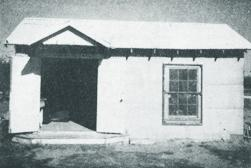
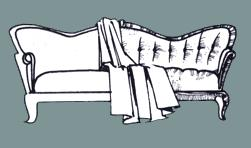
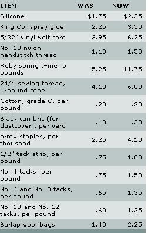

Just like everyone else, we're feeling the rise in prices... especially in the cost of running our small business. Our materials and vinyls are already up 30 cents to $3.00 a yard, and on September 1, 1974 we received our new supply price list with a warning: "All prices subject to change without notice."
Here are the current costs of our most-used supplies, with the going rates back when we started our shop.
Although we didn't know it back then, our family's home business really began several years ago when Billy (my husband) and I upholstered some of our own furniture to save money. Friends and relations saw the results, and were soon asking us to do pieces for them. We felt we weren't skilled enough, but they insisted that we try . . . so, to supplement our income, I started recovering a couch or chair now and then in my spare time.
My first tools-a claw hammer, screwdriver, scissors and sewing machine-made for very slow progress. The living room doubled as my workshop and was always a mess. Then friends told friends about my sideline, and before long our porch was full of old ragged furniture. At that point my family complained about the clutter and insisted that if I must do such work I was going to have to move it out of the house.
At the time, my husband owned and operated a service station . . . not very profitably, what with the nine others in town. "Well," we thought, "if there's all this furniture around just begging to be refurbished, why not sell the business and open an upholstery shop?" We purchased an old one-room house for $120 to serve as quarters for the new enterprise, anti set out to get the information that would make our idea pay.
Our first step was to write the State Comptroller at Austin Texas, requesting an application for a store license and a sale tax number. (These cost us $10.00 a year and entitled us to sell material.) Then we stopped in at a shop in Brownwood and asked the owner where he bought his fabric. A phone call to the company he named-Durotex Supply in Dallas-brought us a visit from a salesman who turned out to be most helpful and encouraging. There was a great opportunity in the upholstering business, he told us, if we would work at it. He gave some material, vinyl sample books and a supply list, told which tools and findings we'd need to start with and quoted the going rates for furniture renovation in Dallas. These seemed high to us and we adjusted the prices to a realistic level for our small town.
Our first purchase was a good secondhand commercial sewing machine and accessories ($80.00). We've since found that one essential for upholstery work is a narrow left- or right- hinged cording foot ($1.85) to form those decorative ribs you've noticed around the edges of stuffed furniture.
Actually-as we learned later-you can sew heavy fabric on any machine if you spray the seam line with a silicone friction reducer. The product (which also has many other uses) no costs $2.35 per 20-ounce can and is an economy considering the price of a new commercial sewing machine. Nevertheless our older model has turned out to be a very good investment
Furniture padding is often formed into tufts which are held in place by metal buttons covered with upholstery fabric. Accordingly, we bought a Handy Jr. button press and a die ant cutter, with five gross of molds, at a cost of $41.15. (The samc outfit would run $62.70 today.) The price of the molds, die and cutter varies with size. We chose Number 30 buttons be cause they're the most common and can stand in for any others that may originally have been used on a chair or couch.
Fabric can be attached to the frame of a piece with tacks or staples. We bought a used Markwell hand stapler for $7.00 (the electric and air models are too expensive for us). Later, when, the price of Markwell staples rose to $5.00 per thousand, we inquired at the local lumberyard and found we could buy Arrow staples at $2.25 per thousand in the 5/16-inch size w use. To cut expenses, we turned in 4-3/4 books of our Green Stamps for a heavy-duty Arrow staple gun kit. The staples are now running $4.10 per box, but we're still ahead of the game.
We found a tack lifter-one of our most used tools-at the hardware store for $1.40... $1.79 these days. Then we ordered a good No. 160 tack hammer ($2.85 then, $4.35 now) and a wooden webbing stretcher (up from $1.20 to $2.85) from Durotex Supply. We also bought a pair of eight-inch shears, although most shops use the more expensive ten-inch length.
Our first supply order consisted of the following: 1 roll of cotton padding, 1 roll 5/32" welting cord, 1 pound No. 8 tacks, 1 pound No. 14 webbing tacks, 1 roll supertwist nylon button twine, 1 spool No. 18 nylon handstitch thread, 1 roll 1/2" tack strip, 1 roll BFM webbing and 20 yards of black cambric. (A glance at the box with this article will give you an idea of former and current prices.) Burlap comes from the feedstore in the form of sheep wool bags ($2.25 each). Unraveled and opened, they measure 40" X 128". We use King Co. spray glue ($3.50 a can) to stick pieces of foam together.
Upholstering is a trade that anyone can learn by trial and error, but I'll try to give you some idea of how the work is done.
The first step in re-covering a piece-a chair, for instance-is to take off the old fabric, beginning with the part that was applied last. This is usually the dustcover under the bottom. If there is none, start with the ruffle or the back and remove it with your tack lifter.
You'll normally find that the back section was put on at the top with a tack strip and then turned down and tacked or stapled under the bottom of the frame . . . and that's just what you'll do later when you replace it. Some chairs also have a metal tack strip down each side of the back, but this is expensive and we prefer to blindstitch the edges by hand.
After the back, the outsides of the arms come off . . . then the insides of the arms, the front of the backrest and the seat. If you think you won't be able to remember where all the pieces go, label the parts as you remove them. Note the order of removal, too, and reverse it when you put on the new material.
As a chair is stripped of its cover, we take the cotton padding off the seat and back, retie the springs and fit new burlap over them. This is the foundation of our upholstery job, and a sudden collapse of the underpinnings a few weeks later would be very bad for business. If the wooden parts of a piece of furniture need refinishing, we do so before we put on new material.
As a rule, a chair or couch or whatever is reassembled the same way it came apart, with new covering cut to the old pattern . . . but if we come up against something we can't figure out, we call a shop in the next town and ask what to do. Our aim is to restore the article to its original condition. It gives us great satisfaction when a customer tells us that a piece of furniture looks just the way it did when he bought it new.
One of our greatest accomplishments was the restoration an 18th-century early Victorian couch. The antique had escape. a fire with bad burns to the cover and wood. The damage was so bad that the first thing we did was tear off the old fabric and throw it away.
When we tackled the woodwork, we found that all our scraping and sanding couldn't take off the black discoloration We tried mopping with a hot, strong lye solution (one cup lye to one gallon of water), followed by a rinse with clean water and a vinegar wash to stop the caustic from eating the wood. Traces of blackness still lingered even after that treatment, and we escalated to swabbing with full-strength bleach. Five bleach treatments later, the surface finally looked the way we wanted it to.
The customer had asked us to refinish his couch to match two early Victorian chairs we were also covering for him. studied the color and tried to duplicate it by mixing clear varnish with a little maple stain, a little fruitwood and a very small amount of mahogany. Then we sanded the piece again, treated it with wood filler and applied our varnish mixture. The dried coating matched the chairs perfectly.
Next we installed webbing, tied the springs, added burlap and padding . . . and turned our minds to the problem of hr to recreate the cover without a pattern. Our strategy was find a picture of a similar couch in an antique book and the tufts and channels in the elaborately upholstered backrest. Then we measured the piece we were salvaging and figured out how wide each section of its design would have to be to create the same effect. It took us one whole day just to make our calculations and draw a pattern to fit, but at last we were able to finish off our masterpiece with a cover of green antique velvet
We made $100 on that job on top of the cost of materials . . . and our salesman told us later that in Dallas the charge for labor in restoring such an antique would have been twice much. It's true that the prices we ask are less than we could get in a large city, but we enjoy life in a small community prefer to raise our children away from crime and violence.
Here are some examples of our current rates for various types of furniture:
Early American chair (with ruffle) . . . . . . . . . . $45
Early American couch (with ruffle) . . . . . . . . . .75
Large overstuffed chair (without ruffle) . . . . . . .40
These figures include a recent increase to cope with the growing cost of our supplies. We used to ask $50.00 for a sofa bed, $30.00 for a studio couch with wooden arms and $20.00 for a matching chair, but now charge $5.00 to $20.00 more depending on the findings we use.
The cost of material is figured separately. We have a selection of fabrics available through our shop, and must pay a 5 percent sales tax on all we sell. If the customer doesn't buy cloth from us, we charge $2.00 extra for each yard it takes to cover his furniture (some firms levy a much higher surcharge). This payment covers necessities other than yard goods: welt cord, staples, tack strip, cotton, burlap , thread, dustcover and cutting time. Some days we net $50.00 on labor and material.
We've come a long way in the three years since we started our business, and have learned many timesavers and shortcut (examples are the silicone, the cording foot and the King Co. spray glue). We've also expanded recently from just renovating furniture to making fancy seat covers for autos and watercraft , boat canopies and snapon protectors for the beds of pick-up trucks. Another sideline is sewing gun cases, caps and put,,, for customers out of the leftover scraps of their material.
People seem pleased with the quality of our service . . . much so that customers' out-of-town friends and families now bring us pieces of furniture from as much as 200 miles away. The business has grown so that we run about a month behind (we don't want to hire extra help because it would add to our overhead and tie us down too much). Our clients say they don't mind waiting because they like our work. We had planned to expand our building, but-what with rising costs and the uncertain economic situation-have decided to wait and see how things turn out.
Special thanks go to our salesman from Durotex Supply, who has been more help to us than anyone else. Each time he comes by he gives us useful pointers, and we're indebted him for much of our success in this business.
One thing we like about our new trade is that we can run the shop from our home. That means no rent, utility bill other overhead expenses . . . and, more importantly, we can with our children during the day. Billy and I enjoy our work together. If it's a perfect day for fishing, though, we'll close our doors and go . . . knowing that no one will complain, for we're our own bosses. In short, were satisfied with the a upholstery business and recommend it to anyone who wants nearly complete control over his or her working conditions.
|
 ABOVE: An upholstery shop doesn't need fancy quarters? the Underwoods run their business from this $120 cottage. |
 |
 |